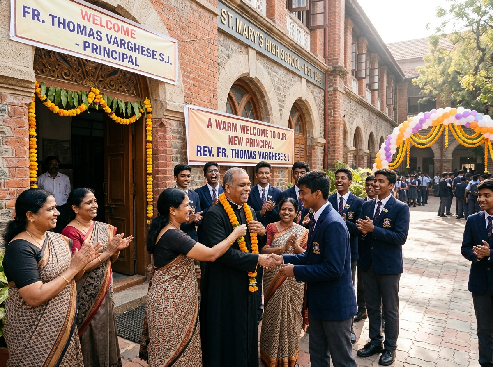
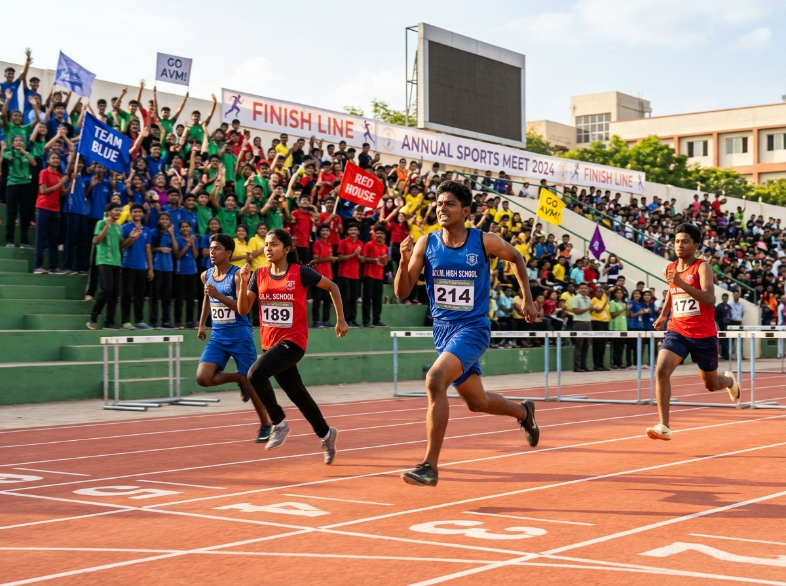
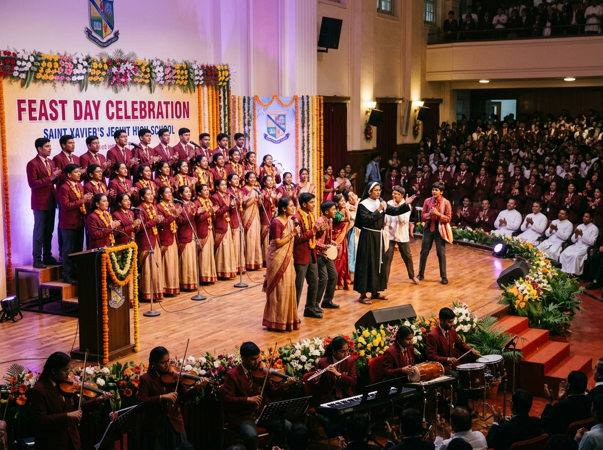

Academic Excellence
A rigorous and holistic curriculum designed for future-ready learners.
The official site of St. Paul's Jesuit School (Belgaum)
WELCOME TO
The official site of St. Paul's Jesuit School (Belgaum). A Catholic institution committed to holistic education, character formation and service to society.
Explore Our SchoolWHY CHOOSE US
We provide a nurturing environment where academic excellence, strong values and meaningful opportunities come together to help every student discover their potential.
A rigorous and holistic curriculum designed for future-ready learners.
Rooted in Jesuit traditions of faith, service and integrity.
Opportunities in sports, arts, clubs and leadership for well-rounded growth.
A safe, inclusive and supportive environment for every child.
In fidelity to our vocation as servants of Christ’s mission, we build human communities imbued with the values of God’s Kingdom — Justice, Love and Service.
To form academically excellent, compassionate and responsible individuals who will contribute to a more humane, just and peaceful society, inspired by the values of the Gospel.
Stay updated with the latest happenings at St. Paul’s Jesuit School.
June 1, 2026
Welcome to an exciting new school year! A brand-new grade means a whole fresh start, new opportunities and accomplishments.
Read More
ANNOUNCEMENTMay 29, 2026
Our school community is thrilled to announce the arrival of our new principal, Fr. Eric Mathias SJ. We look forward to this new chapter together.
Read More
UPCOMING EVENTJuly 15, 2026
Join us for a day of sportsmanship, teamwork and excitement as our students showcase their talent and spirit.
Read More
UPCOMING EVENTAugust 22, 2026
We invite all students, parents and well-wishers to join us for the solemn celebration of the feast of our founder, St. Ignatius Loyola.
Read More